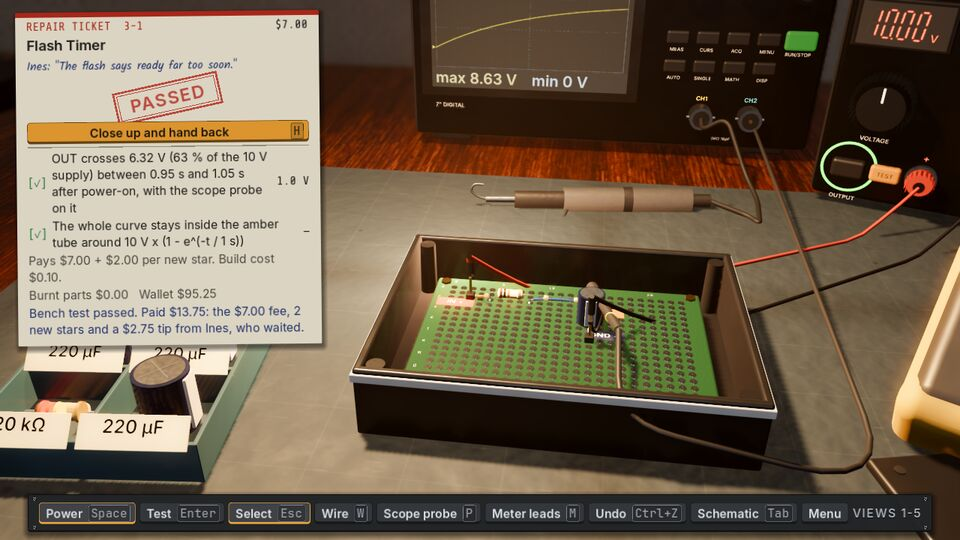
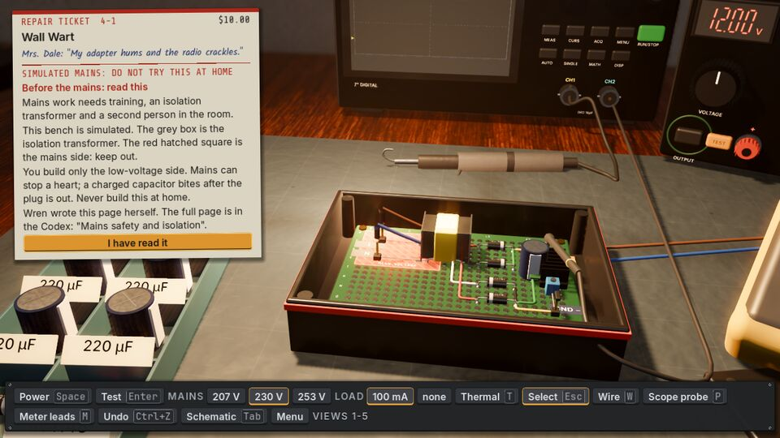
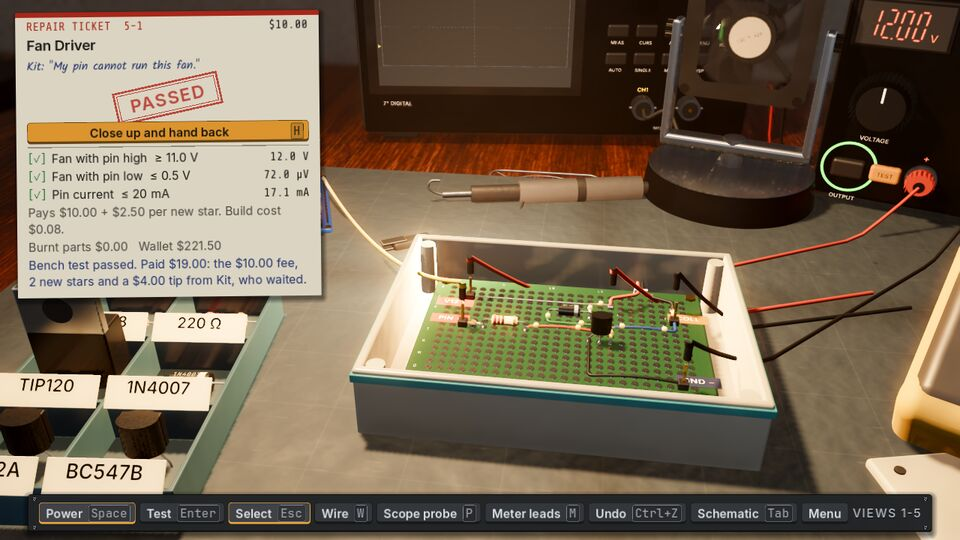
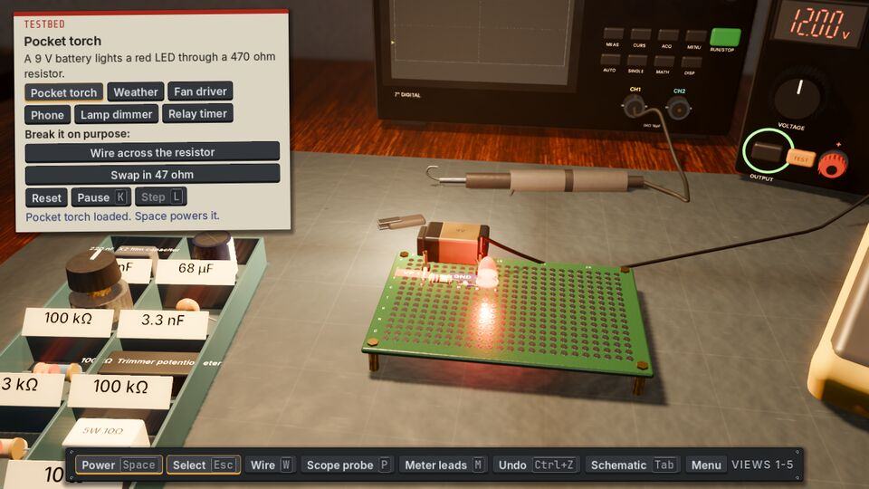
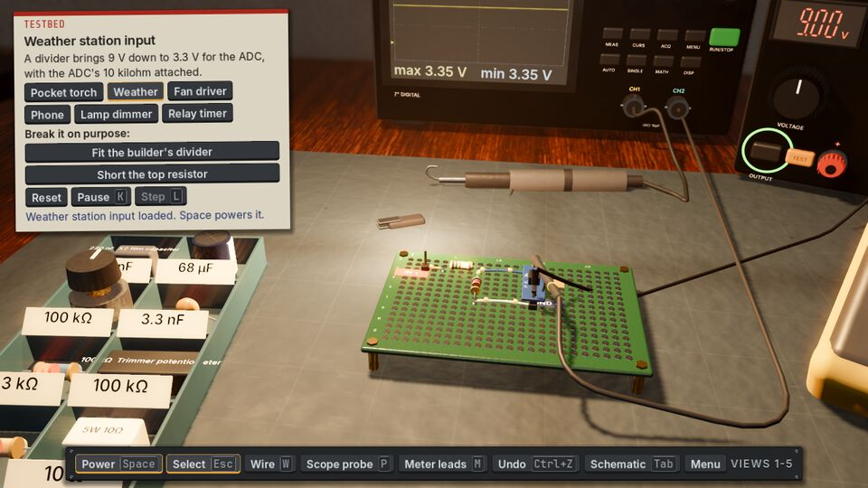
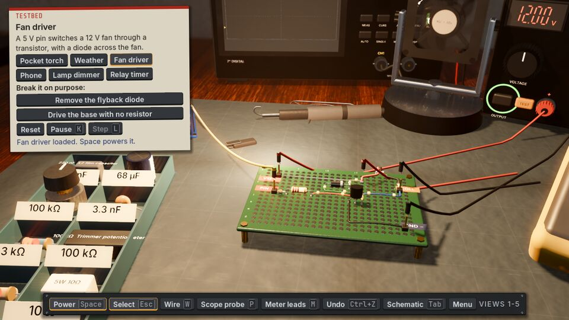
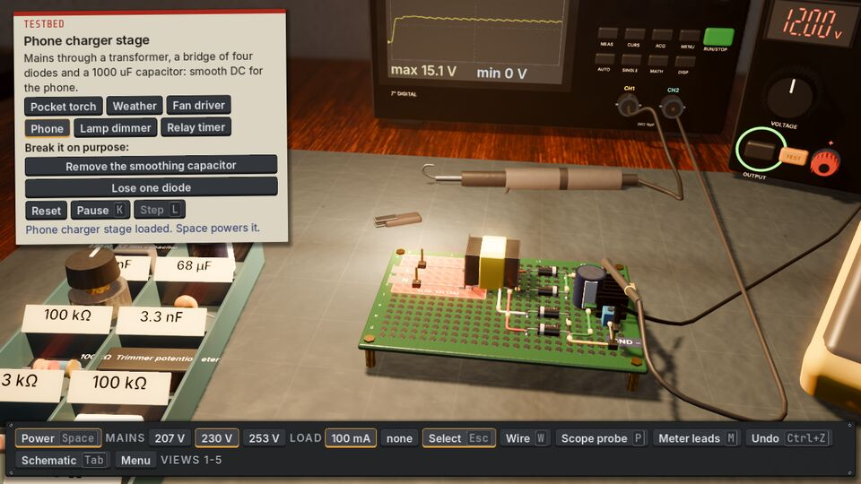
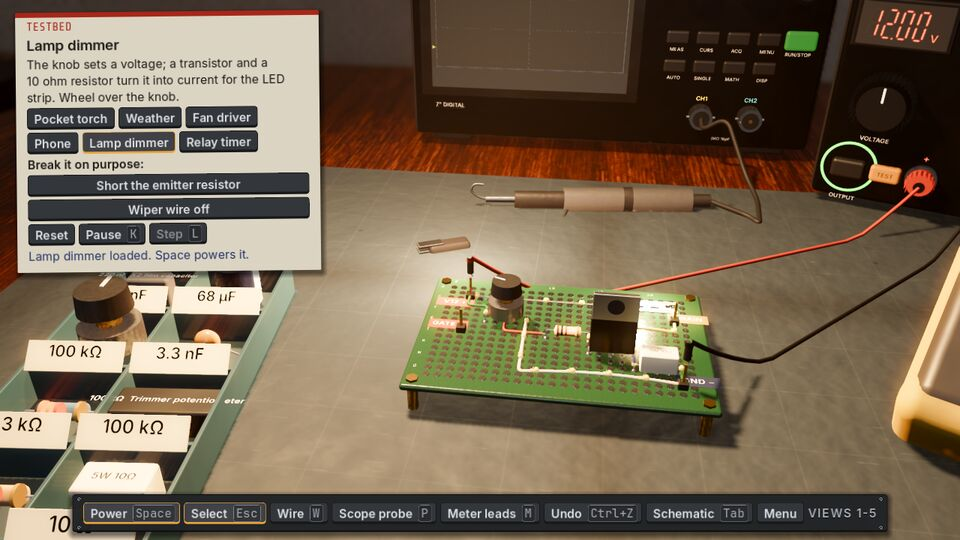
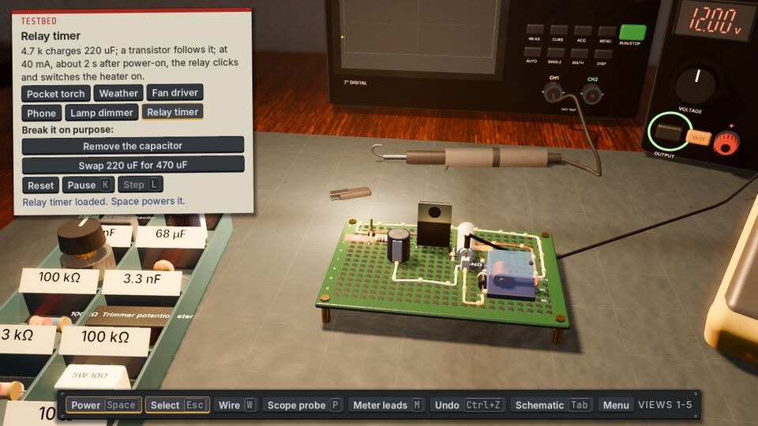

Wiki
CIRCUITS wiki
Every job in the game, what the bench checks before it pays, and the parts you get.
How a job works
- Take the ticket. The customer's words, the specs the fix must meet, the pay.
- Open the case. A repair comes with the customer's own faulty board. Probe it with the meter or the scope before you change it.
- Fix it. Remove the bad work, place parts from the tray, wire them pad to pad.
- Power and test. The bench test checks every spec in every condition with the power on. A part you burn comes out of the pay. A customer who waits tips 40 % of the fee on a first-test pass; each failed test takes a quarter of it.
- Hand it back. The lid goes on and the customer takes the device home.
What is in the game now
Version 0.6.0: 5 chapters and 23 jobs, all on the 3D workbench. A testbed of 6 devices. A free bench. Mouse and gamepad.
The chapters
 Chapter 1 · First LightTorch · Tail-light · Hot Resistor · Tired Battery · Exam: Two Batteries
Chapter 1 · First LightTorch · Tail-light · Hot Resistor · Tired Battery · Exam: Two Batteries Chapter 2 · Divide & MeasureSensor Reference · Cable Fault · Black Box · Exam: Potentiometer
Chapter 2 · Divide & MeasureSensor Reference · Cable Fault · Black Box · Exam: Potentiometer
Chapter 3 · ChargeFlash Timer · Debounce · Relay Pull-in · Exam: Capacitor Bank
Chapter 4 · Mains & RectifiersWall Wart · Zener Shunt · Hot Regulator · Bench Supply · Exam: Zener Regulator
Chapter 5 · Switches & GainFan Driver · 3.3 V Gate · Gate Builder · Synth Preamp · Exam: CE Amplifier
The classic 2D stall is an option under Settings on the title.
Planned, not built yet
- Chapter 6 · Op-Amp AlleyInverting and non-inverting amplifiers, gain-bandwidth, slew, comparators and the Schmitt trigger, the integrator.
- Chapter 7 · Tone & ResonanceReactance, RMS, RC filters and Bode plots, series LCR resonance and Q, active filters.
- Chapter 8 · OscillateThe 555 astable, the phase-shift oscillator, a buck converter, a synth voice.
Money
- Each job pays its fee, plus a bonus for each new star.
- A customer who waits tips 40 % of the fee for a pass on the first bench test. Each failed test takes a quarter of the tip. On 1-1 a failed test costs nothing.
- A part you burn is a rush order: the part plus a courier fee, out of your pay.
- The condition dial costs $15.00. With it, the live bench runs any of the ticket's test conditions, such as a tired battery, so you can check before you test. It is free on the testbed and the free bench.
Testbed
Known devices with their working boards. Probe one live, break it on purpose, then pause (K) and step (L) time to watch what happens.






Free bench
Any part, the bench supply, the scope and the meter, with three save slots. On the title.